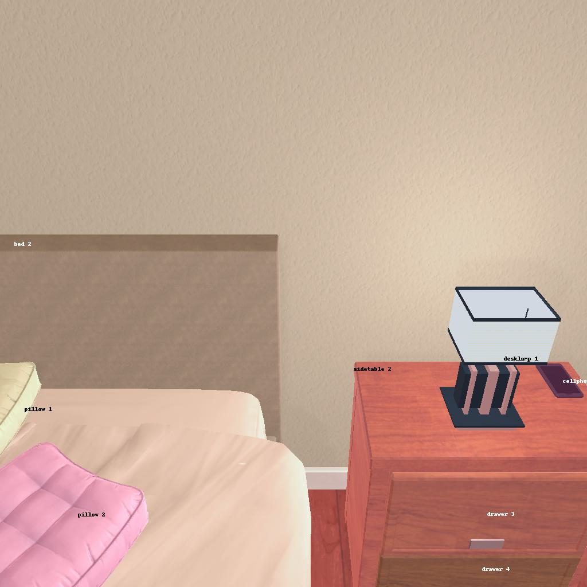
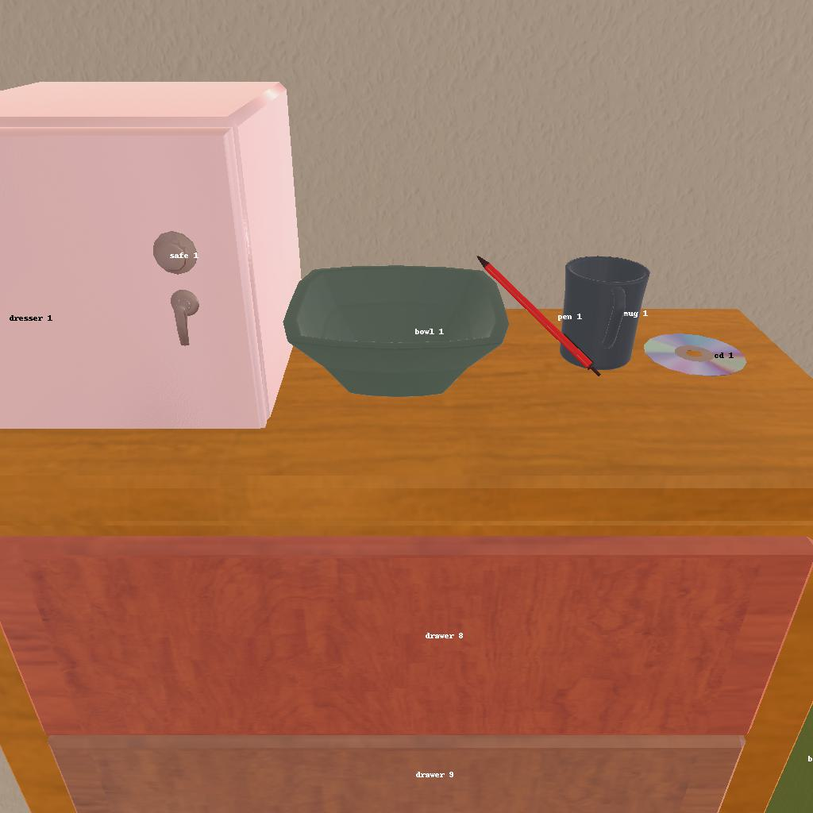

---------------------------------------------------------task: 6---------------------------------------------------------
--------------------------------------------------------------------------------------------------------------------------------------------------------------------
--------------------------------------------------------------------------------------------------------------------------------------------------------------------
Step:--------------------------------------------------------------------------6-------------------------------------------------------------------------------
----------------------------------------
VLM Prompt:
Image1:
Image2:
Image3:
**Instruction**
1. Analyze the provided image to identify all visible household objects, focusing on those relevant to the task description "put some cd on safe."
2. Use the analysis of the image and the task hint "The agent must find an object of the desired type, pick it up, find the correct location to place it, and put it down there." to answer the question: what is the most reasonable action in the choices for the task description "put some cd on safe"?
4. Decide and write the answer using the template: The answer is: (i): , where i is the real number. If there is no desired object in the image, search every place based on **Initial Observation** to find the object. And if no one is exactly correct, choose a similar answer.
**Initial Observation**
You are in the middle of a room. Looking quickly around you, you can see bed (1-2), dresser (1), sidetable (1-2), drawer (1-11), desk (1), garbagecan (1), safe (1)
**Answer Choices**
(1): go to bed 1
(2): go to bed 2
(3): go to sidetable 1
(4): go to drawer 1
(5): go to drawer 2
(6): go to sidetable 2
(7): go to drawer 4
(8): go to desk 1
(9): go to garbagecan 1
(10): go to drawer 5
(11): go to drawer 6
(12): go to drawer 7
(13): go to drawer 8
(14): go to drawer 9
(15): go to drawer 10
(16): go to drawer 11
(17): go to safe 1
(18): take bowl 1 from dresser 1
(19): take mug 1 from dresser 1
(20): take cd 1 from dresser 1
(21): take pen 1 from dresser 1
(22): examine dresser 1
**Answer**
Let's think step by step by following the instructions.
----------------------------------------
----------------------------------------
Original Response:
First, we analyze the provided images to identify all visible household objects. In Image 1, we can see a bed (bed 2), a sidetable (sidetable 2), a desk lamp (desklamp 1), and a cellphone. In Image 2, we can see a dresser (dresser 1), a bowl (bowl 1), a pen (pen 1), a mug (mug 1), and a CD (cd 1) on top of the dresser. Image 3 is identical to Image 2.
Next, we use the analysis of the image and the task hint to determine the most reasonable action for the task description "put some cd on safe." Looking at the images, we can see that there is a CD (cd 1) on top of the dresser (dresser 1). Since the task is to put a CD on the safe (safe 1), the most reasonable action would be to first take the CD from the dresser.
Finally, we use the template to write the answer:
The answer is: (20): take cd 1 from dresser 1.
----------------------------------------
----------------------------------------
>>> Refine Original VLM Response and Get Pure Action: take cd 1 from dresser 1
----------------------------------------
-----------------------------------------------------------------
Running time: 13.266866207122803 seconds
Total Money: 3.2156099999999994
-----------------------------------------------------------------
-----------------------------------------------------------------
Text Observation:You pick up the cd 1 from the dresser 1.
-----------------------------------------------------------------
UNSUCCEED